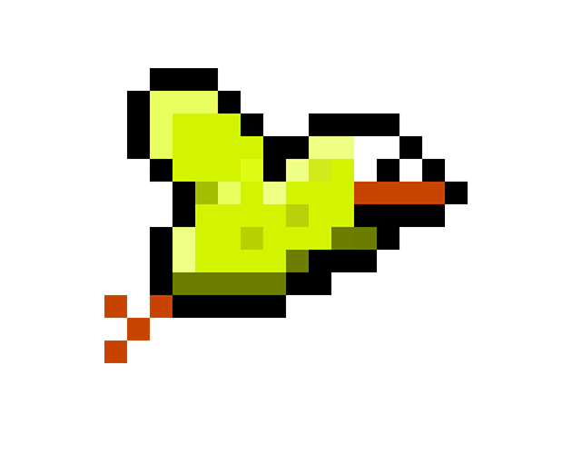

Schnappy Blurd
Un petit jeu fait entièrement via Unity (C#)
Téléchargeable via MediaFire, ce jeu est (totalement) inspiré du célébre jeu Flappy Bird.
Je le met dans mon portfolio parceque c'est le tout premier jeu que j'ai fait via Unity et donc la première fois que j'ai touché au C#.
J'ai totalement accroché à ce langage. La création de Schnappy Blurd était un moyen de me familiariser à Unity et au C#, il ne fallait pas que je commence trop gros.
(Tout les designs sont fait par mes soins, ce qui était très amusant à faire)